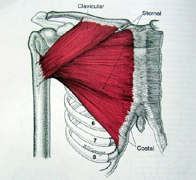

흉근(Pectoralis)
1) 대흉근 (Musculus pectoralis major)

흉부 앞면을 덮고 있는 편평하고 매우 강대한 근육이다.
쇄골 앞과 안쪽에서 일어나는 쇄골기시점, 흉골과 늑연골 1-6번에서 일어나는 늑골
쇄골 기시점을 갖는다.
대흉근의 반대쪽에 위치한 견갑골 주변의 근육을 운동해 줌으로써 균형있고 안정감
있는 어깨를 만들 수 있다.
사진에서 보는바와 같이 대흉근은 위, 중간, 아래 세부위로 나뉘어 있음을 알 수 있
다. 따라서 제대로 발달시키기 위해선 각 부위별로 고립훈련을 할 필요가 있다.
2) 소흉근 (Musculus pectoralis minor)
소흉근은 대흉근 내부쪽 3~5번 갈비뼈의 늑연골 근처에서 시작하여 견갑골의
오구돌기 내측 상면에 정지하는 근육으로, 견갑골의 안정화(stability)을 담당한다.
가슴 하단과 전거근 사이에서 대흉근에 힘을 주면 살짝 밀려 나오는 근육이다.
소흉근의 발달을 위해 별도의 단련을 할 필요는 없을 것이라 생각한다. 대흉근 단련
시 자연스럽게 소흉근도 발달할 것이다.